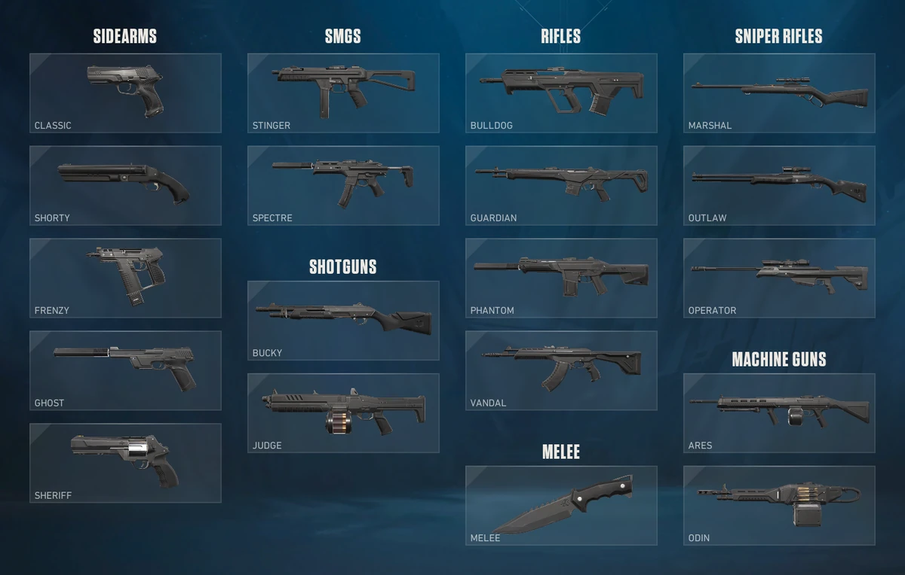

A Valorant 5v5 formátumban játszódik, és a meccsek körökre osztottak. Az egyik csapat feladata, hogy a "Spike" nevű bombát lerakja és megvédje, míg az ellenfél célja, hogy ezt megakadályozza, vagy ha a bomba felrobbant, hatástalanítsa. Az első csapat, amelyik 13 kört megnyer, győz.
A játék egyik legnagyobb különlegessége az "ügynökök" jelenléte. Ezek a karakterek különféle képességekkel rendelkeznek, amelyek taktikai mélységet és változatosságot hoznak a játékba. Az ügynökök négy kategóriába sorolhatók:
A Valorant többféle játékmódot kínál, amelyek különféle élményeket nyújtanak:
A játékmenet része a gazdaság menedzselése is: minden kör után a játékosok pénzt kapnak, amelyet fegyverekre és képességekre költhetnek. Választhatnak különböző típusú fegyverek közül (mint a pisztolyok, automata puskák, mesterlövész puskák), amelyek mindegyikének saját visszarúgási mintája és sebzése van.
